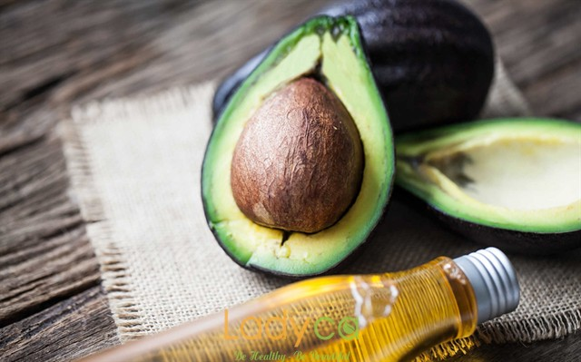
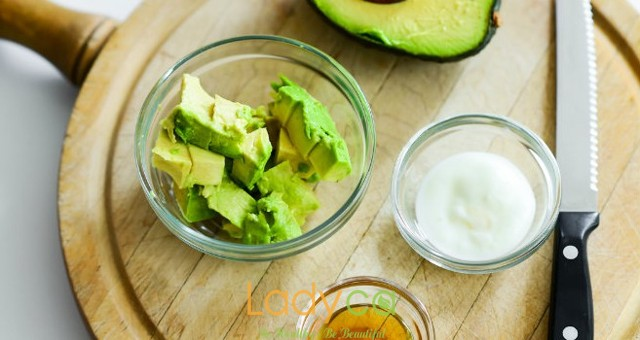

BÀ BẦU DÙNG TINH DẦU BƠ TRỊ RẠN DA
Hiện tượng rạn da là một trong những điều khá phổ biến mà chị em phụ nữ trong thời kỳ mang thai gặp phải, có người rạn da ít có người rạn da nhiều và đó là “dấu ấn thai kỳ” khiến chị em khó quên. Để phòng tránh giảm thiểu tối đa những vết rạn da chị em thường áp dụng nhiều phương pháp như chữa rạn da bằng tia Laser thẩm mỹ, bằng các loại kem chống rạn da, bằng những loại tinh dầu như tinh dầu dừa, tinh dầu bơ, tinh dầu ca cao…
Hiện tượng rạn da là một trong những điều khá phổ biến mà chị em phụ nữ trong thời kỳ mang thai gặp phải, có người rạn da ít có người rạn da nhiều và đó là “dấu ấn thai kỳ” khiến chị em khó quên. Để phòng tránh giảm thiểu tối đa những vết rạn da chị em thường áp dụng nhiều phương pháp như chữa rạn da bằng tia Laser thẩm mỹ, bằng các loại kem chống rạn da, bằng những loại tinh dầu như tinh dầu dừa, tinh dầu bơ, tinh dầu ca cao…

tinh dầu bơ trị rạn da
Trong đó sử dụng tinh dầu bơ phòng trừ rạn da là một trong những phương pháp tự nhiên rất an toàn,
chi phí thấp mà chị em phụ nữ có thể tự làm tại nhà.
Bà bầu tự làm tinh dầu bơ nguyên chất tại nhà

tự làm tinh dầu bơ nguyên chất
Quả bơ là một trong những loại trái cây không khó tìm mua, mẹ bầu có thể “tự chế” tinh dầu bơ tại nhà
để sử dụng là an toàn nhất. Để sở hữu tinh dầu bơ phục vụ cho việc làm đẹp da, phòng trừ rạn da lúc
mang bầu chị em làm theo hướng dẫn sau.
Đầu tiên, chị em chọn mua 2kg bơ sáp đã chín rồi cạo lấy phần thịt của quả bơ nhớ loại bỏ những cục u hoặc khối bơ bị sượng (nếu có), cho vào máy xay sinh tố, đổ thêm 1 lít nước cốt dừa vào trộn đều.
Sau đó, chị em xay mịn bơ và nước cốt dừa, rồi để hỗn hợp vừa xay nhuyễn vào một nồi lớn cho lên bếp đun nhỏ lửa. Chị em đun hỗn hợp và cứ 5 phút lại khuấy một lần để đảm bảo hỗn hợp không bị cháy. Chị em cứ 6 tiếp tục nấu hỗn hợp với lửa nhỏ cho đến khi tất cả các độ ẩm đã bị trích xuất và bốc hơi, sau đó tắt lửa.
Tiếp theo, chị em đặt một tấm vải vào một cái bát lớn, đổ thịt bơ đã nấu chín để nguội lên tấm vải. Chị em túm chặt đầu tấm vải rồi bóp thịt bơ trong vải để trích xuất tinh dầu bơ nhiều như bạn có thể. Cuối cùng, chị em đổ tinh dầu bơ vừa chiết xuất được vào hũ thủy tinh kín tối màu dùng dần.
Đầu tiên, chị em chọn mua 2kg bơ sáp đã chín rồi cạo lấy phần thịt của quả bơ nhớ loại bỏ những cục u hoặc khối bơ bị sượng (nếu có), cho vào máy xay sinh tố, đổ thêm 1 lít nước cốt dừa vào trộn đều.
Sau đó, chị em xay mịn bơ và nước cốt dừa, rồi để hỗn hợp vừa xay nhuyễn vào một nồi lớn cho lên bếp đun nhỏ lửa. Chị em đun hỗn hợp và cứ 5 phút lại khuấy một lần để đảm bảo hỗn hợp không bị cháy. Chị em cứ 6 tiếp tục nấu hỗn hợp với lửa nhỏ cho đến khi tất cả các độ ẩm đã bị trích xuất và bốc hơi, sau đó tắt lửa.
Tiếp theo, chị em đặt một tấm vải vào một cái bát lớn, đổ thịt bơ đã nấu chín để nguội lên tấm vải. Chị em túm chặt đầu tấm vải rồi bóp thịt bơ trong vải để trích xuất tinh dầu bơ nhiều như bạn có thể. Cuối cùng, chị em đổ tinh dầu bơ vừa chiết xuất được vào hũ thủy tinh kín tối màu dùng dần.